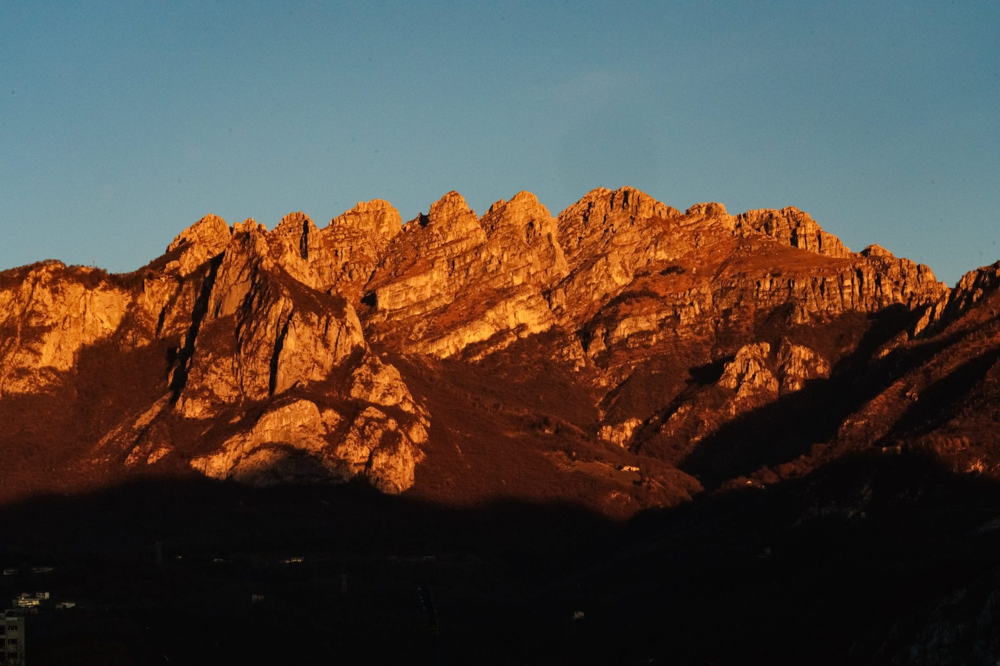
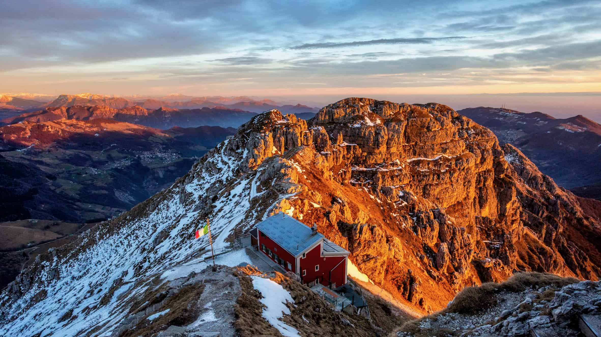

Il Resegone (Resegun in lecchese, Resegù in bergamasco, storicamente Resegun de Lecch in milanese e comasco), detto anche Monte Serrada, è una montagna delle Prealpi Orobie alta 1875 m s.l.m., situata al confine tra la provincia di Bergamo e la provincia di Lecco. Il nome prende origine dal suo celebre profilo e dall'italianizzazione del termine lombardo resegun (grande sega), dato che, soprattutto se osservate dalla città di Lecco e dalla Brianza, le sue nove punte principali ricordano proprio la lama di una sega. Il suo secondo nome Serrada può significare che chiude (serra) le valli circostanti ma potrebbe derivare pure dallo spagnolo (segata si traduce aserrada e gli spagnoli dominarono qui per quasi 2 secoli).

La splendida vista dalla cima del Resegone
